P6
DDPM (Denoising Diffusion Probabilistic Models)
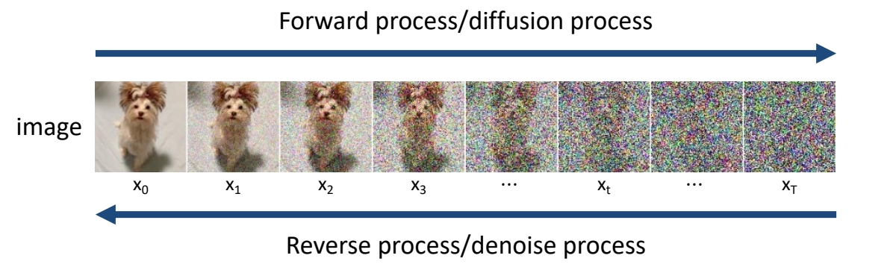
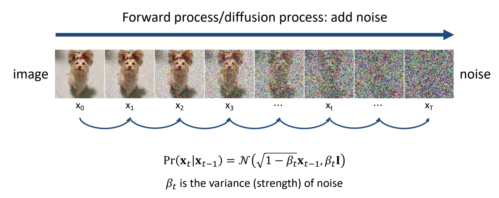
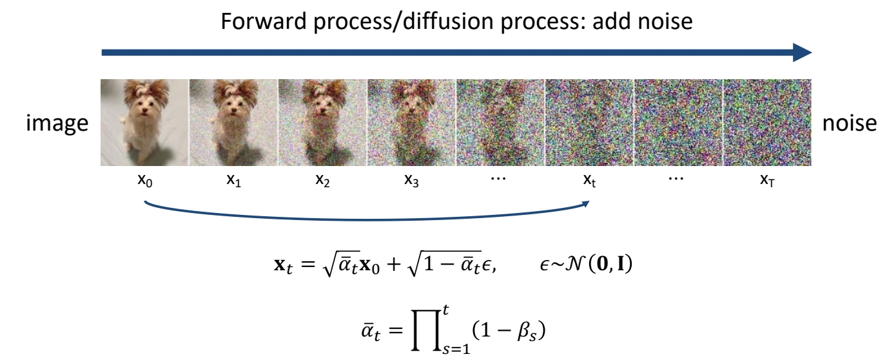
✅ 通过公式推导，可以直接从 \(x_0\) 加噪到 \(x_t\)．
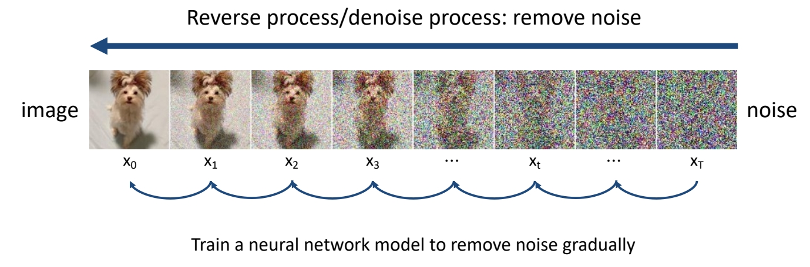
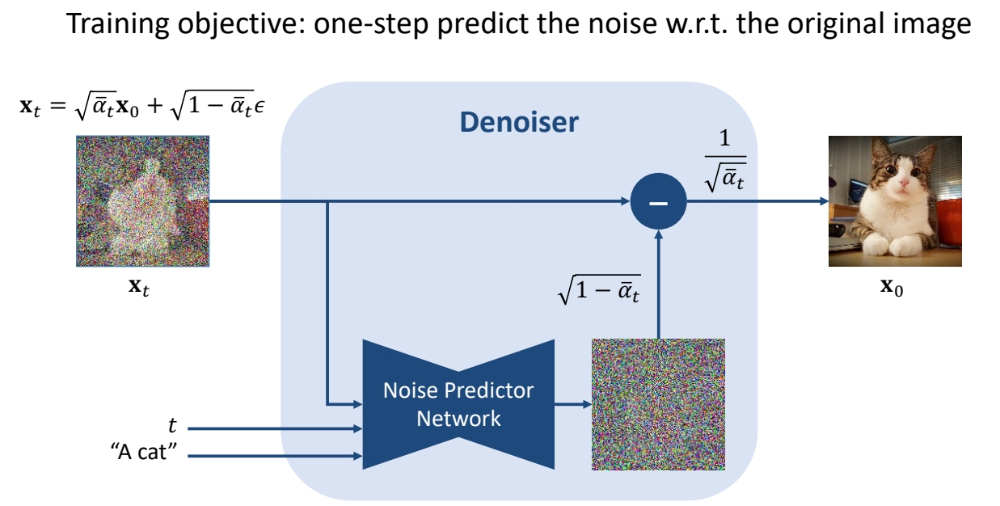
✅ 输入带噪声图像，预测噪声，原图像去掉噪声后得到干净图像。
✅ \(x_t\) 可以处于任意时间步，可以一步去噪到干净图像。
✅ Noise Predictor Network 通常使用 UNet.
✅ \(t\) 代表时间步，网络可以以此决定去噪程度。
✅ “A cat” 是文本 condition.
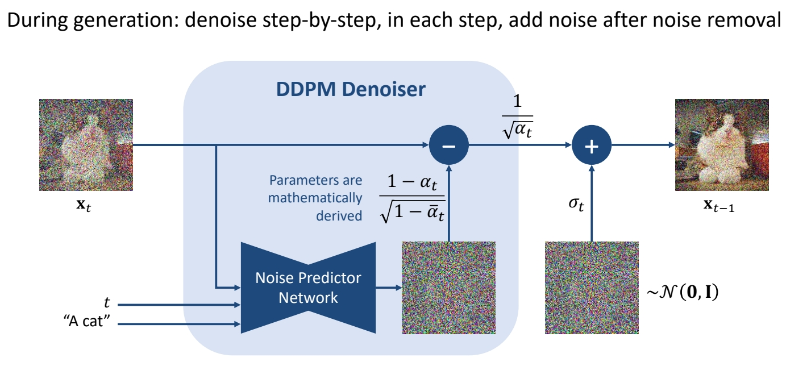
✅ 虽然训练时是根据 \(x_t\) 预测 \(x_0\).
✅ 但是推断时，\(x_t\) 减去噪声后，又重新 sample 出一个噪声后加到图像上，变成 \(x_{t-1}\)．
✅ 考虑一次去噪可能会出错，所以再加一些噪声，达到慢慢去噪的效果。
| ID | Year | Name | Note | Tags | Link |
|---|---|---|---|---|---|
| 2020 | Denoising Diffusion Probabilistic Models | Diffusion Model 的第一篇论文 | link |
Sohl-Dickstein et al., “Deep Unsupervised Learning using Nonequilibrium Thermodynamics,” ICML 2015.
Song et al., “Score-Based Generative Modeling through Stochastic Differential Equations,” ICLR 2021.
Vahdat et al., “Denoising Diffusion Models: A Generative Learning Big Bang,” CVPR 2023 Tutorial.
P14
DDIM (Denoising Diffusion Implicit Models)

| ID | Year | Name | Note | Tags | Link |
|---|---|---|---|---|---|
| 2 | 2021 | Denoising Diffusion Implicit Models (DDIM) | ✅ DDIM：可以直接从 \(t_2\) 去噪到 \(t_1\). ✅ 把 \(x_t\) 去掉一个 nolse 之后，不是 sample 另一个noise，而是把原来的 noise 乘以一个系数再加回去。 | link |
DDPM vs DDIM
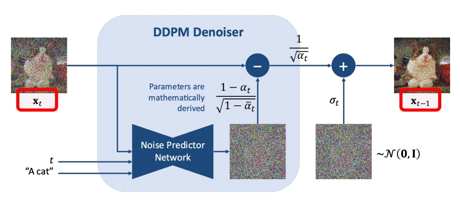 | DDPM cannot skip timesteps A few hundreds steps to generate an image |
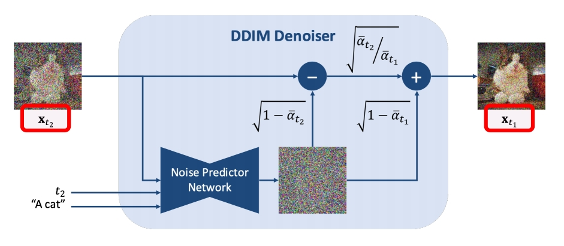 | DDIM can skip timesteps Say 50 steps to generate an image |
Song et al., “Score-Based Generative Modeling through Stochastic Differential Equations,” ICLR 2021.
Song et all, “Denoising Diffusion Implicit Models,” ICLR 2021.
P16
The task of Inversion

Song et al., “Denoising Diffusion Implicit Models,” ICLR 2021.
Su et al., “Dual Diffusion Implicit Bridges for Image-to-Image Translation,” ICLR 2023.
Mokadi et al., “Null-text Inversion for Editing Real Images using Guided Diffusion Models,” CVPR 2023.
✅ 已有训好的 denoiser，输入干净图像，求它的噪声。
P17
前向过程与 DDIM Inverse 的区别
Based on the assumption that the ODE process can be reversed in the limit of small steps
Forward Diffusion Process: Add \(\mathcal{N} (0,\mathbf{I} ) \) Noise
DDIM Inversion Process: Add Noise inverted by the trained DDIM denoiser
Song et al., “Denoising Diffusion Implicit Models,” ICLR 2021.
Su et al., “Dual Diffusion Implicit Bridges for Image-to-Image Translation,” ICLR 2023.
Mokadi et al., “Null-text Inversion for Editing Real Images using Guided Diffusion Models,” CVPR 2023.
✅ DDIM Inverse 可用于图片编辑
p18
Wanted to learn more?
- CVPR Tutorial (English): https://www.youtube.com/watch?v=cS6JQpEY9cs
- Lil’s blog: https://lilianweng.github.io/posts/2021-07-11-diffusion-models/
- Hung-yi Lee (Chinese):
- Checkout codes -- Always associate theory and implementation!
P20
CLIP
Encoders bridge vision and language
- CLIP text-/image-embeddings are commonly used in diffusion models for conditional generation
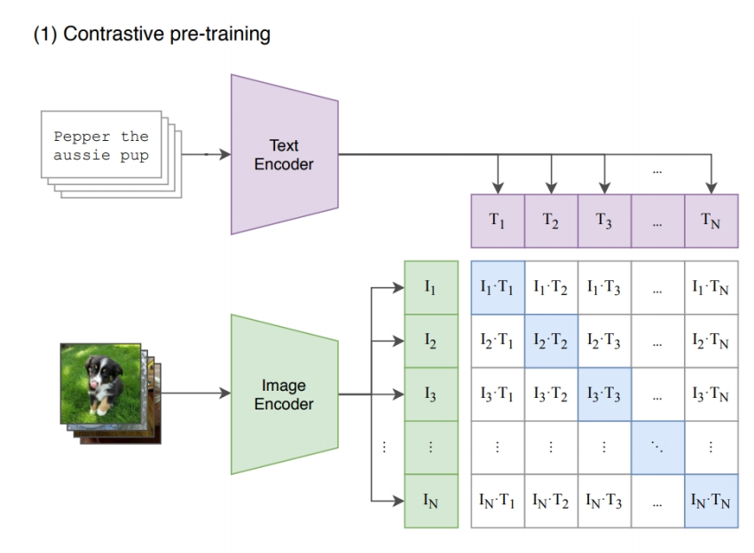
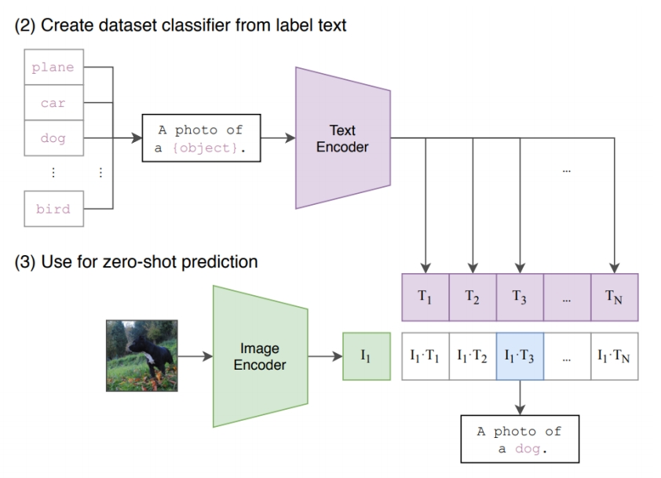
Radford et al., “Learning Transferable Visual Models From Natural Language Supervision,” ICML 2021.
❓ 文本条件怎么输入到 denoiser？
✅ CLIP embedding：202 openai，图文配对训练用 CLIP 把文本转为 feature.
P21
Latent Diffusion

| ID | Year | Name | Note | Tags | Link |
|---|---|---|---|---|---|
| 45 | 2022 | High-Resolution Image Synthesis with Latent Diffusion Models | ✅ (1)：在 latent space 上工作 ✅ (2)：引入多种 condition． | link | |
| 38 | 2021 | Lora: Low-rank adaptation of large language models | 对已训好的大模型进行微调，生成想要的风格。学习其中的残差。残差通常可以用low rank Matrix来拟合，因此称为low-rank adaptation。low rank的好处是要训练或调整的参数非常少。 | link | |
| 2023 | Mix-of-Show: Decentralized Low-Rank Adaptation for Multi-Concept Customization of Diffusion Models |
P25
DreamBooth
Few-shot finetuning of large models for generating personalized concepts
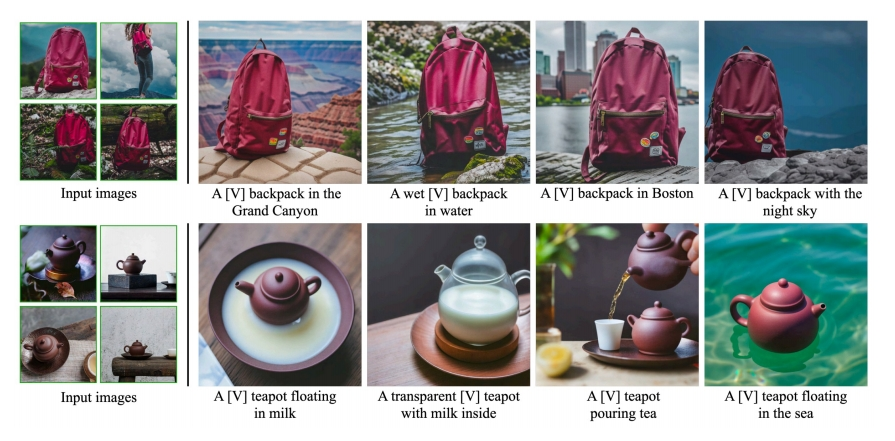 | 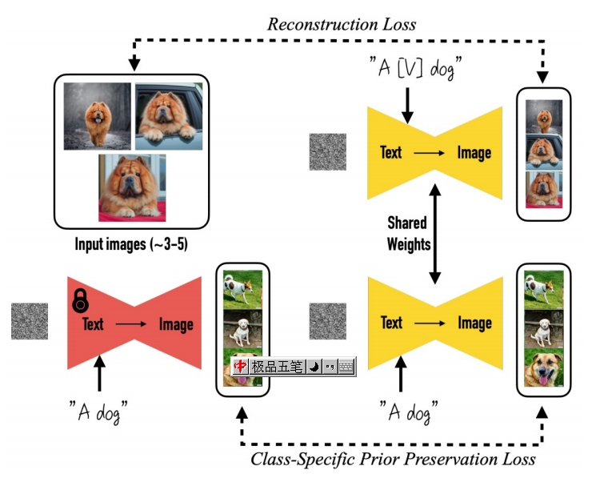 |
Ruiz et al., “DreamBooth: Fine Tuning Text-to-Image Diffusion Models for Subject-Driven Generation,” CVPR 2023.
✅ DreamBooth：输入文本和图像，文本中的［V］指代图像，生成新图像。
✅ 特点：对预训练的 diffusion model 的权重改变比较大。
P26
ControlNet
Conditional generation with various guidances
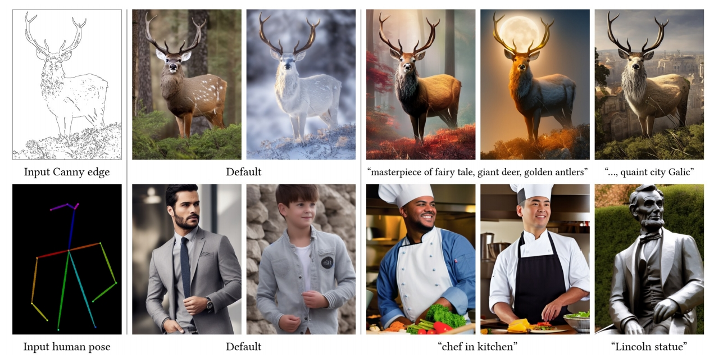
✅ Control Net：更细粒度的 condition．
✅ 方法：(1) 预训练好 Diffusion Model (2) 参数复制一份，原始网络 fix (3) 用各种 condition finetune 新的网络。 (4) 两个网络结合到一起。
Conditional generation with various guidances
- Finetune parameters of a trainable copy
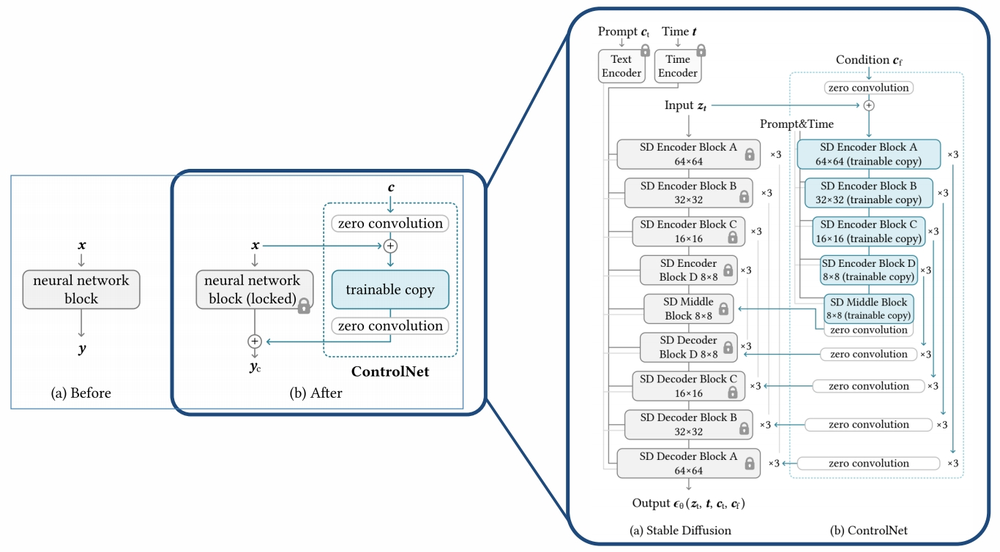
Conditional generation with various guidances

Zhang et al., “Adding Conditional Control to Text-to-Image Diffusion Models,” ICCV 2023.
本文出自CaterpillarStudyGroup，转载请注明出处。
https://caterpillarstudygroup.github.io/ImportantArticles/